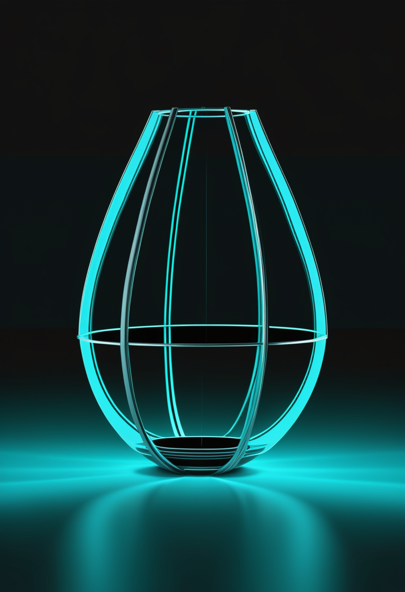
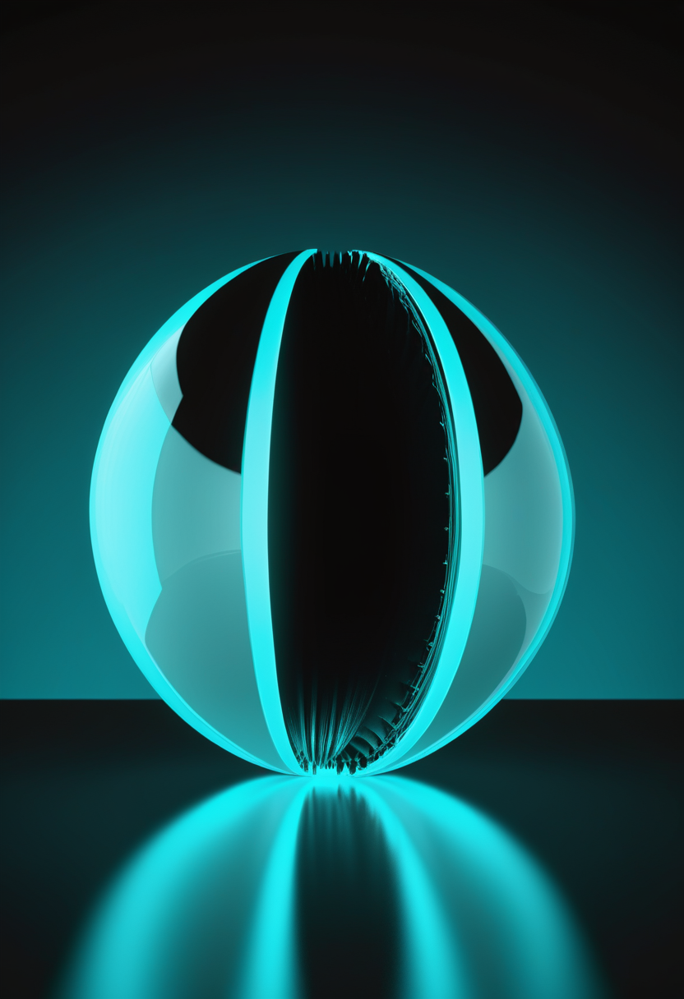
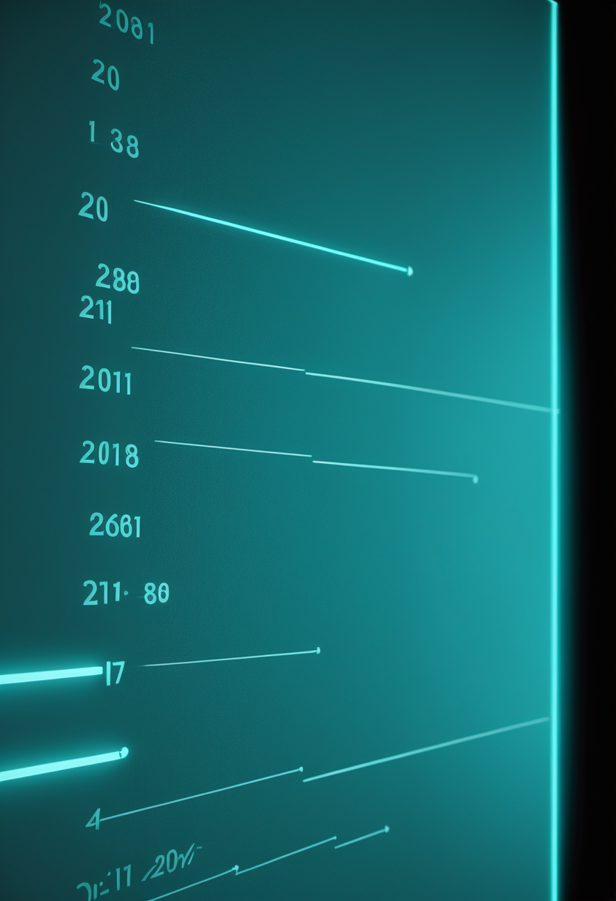
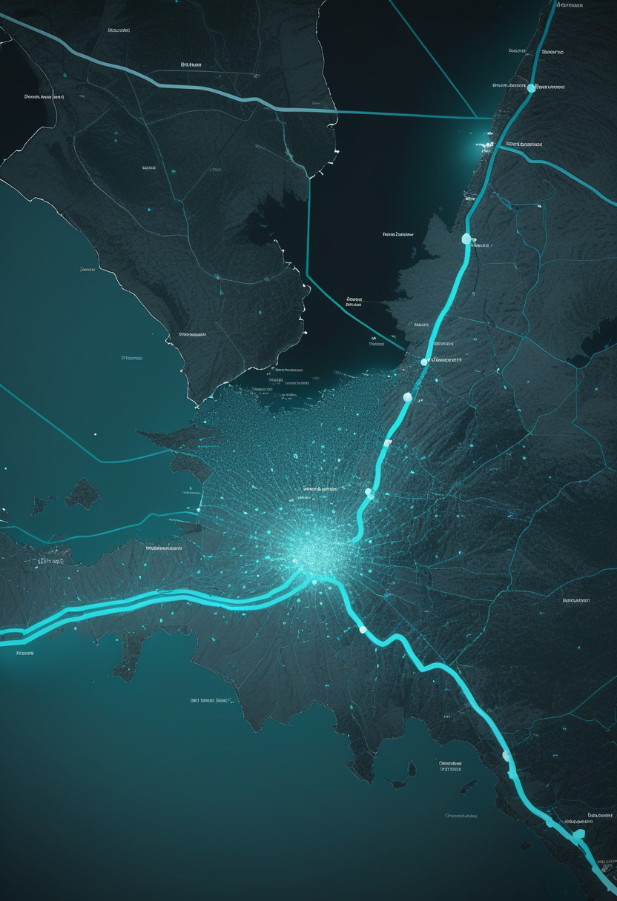

月曜日の便り。Neuralinkの臨床試験参加者で、ALSのため四肢を動かせないNick Wray氏が、脳に埋め込んだ装置からの信号でロボットアームを操作し、コップを持ち上げて自力で飲む動作を初めて行った。自由の章では、別の参加者Alex氏が補助ロボットアームの操作に到達したことと、複数人の『見つめ合い』を自動検出する視線計測の新手法も届ける。命の章では、生後90日より前の治療開始が独歩率を2倍近く高めるというCure SMAの新データと、英国内でも新生児SMA検査に地域差が残っている現状を伝える。基盤の章では、WHOが2023年の世界平均寿命がコロナ前の水準へ回復した一方で健康な年数はまだ戻っていないと報告したこと、DRCのエボラの震源地が北キブ州へ移りつつあることを届ける。畏敬の章では、NASAのローマン宇宙望遠鏡のコロナグラフが初めて星の光を捉えたこと、嫦娥六号の月の土から月で初めての磁性鉄が見つかったこと、真空のゆらぎで超伝導が強まる実験が成功したことを紹介する。美の章では、31万5,000年前の最古のホモ・サピエンスの顔の復元と、恐竜時代に泳いでいた哺乳類の化石を取り上げる。

ALS(筋萎縮性側索硬化症)によって四肢を動かせないNick Wray氏が、脳に埋め込んだNeuralinkの装置からの信号でロボットアームを操り、コップを持ち上げて自力で飲む動作を初めて行った。カーソル操作の記録更新が続く一方で、BCIの出力先は画面の中から物理的な動作の再獲得へと広がっている。詳細は「自由」の章で。

Cure SMAのCommunity Update Survey(2020〜2024年収集、SMN2が2コピー以下の228人・延べ414件の回答)に基づく新たな分析で、生後90日より前に疾患修飾療法(DMT)を始めた子どもは独歩に至った割合が73.2%に達し、90日以降に開始した子ども(36.7%)の2倍近くだったことが示された。脊柱側弯の発生率も24.4%対62.5%、頻繁な嚥下障害も早期開始群で少なかった。どの薬を選ぶかより、いつ治療を始めるかの差が長期の運動機能を大きく左右することを、実データが裏づけている。
イングランドが10月1日に新生児全員対象のSMAスクリーニング実証事業を始めた一方、連合王国の中でも実施状況には差がある。スコットランドは今年3月から独自に開始し、隣接するアイルランド共和国も全国の新生児かかと採血検査にSMAを組み込み済みだが、北アイルランドとウェールズには導入計画が現時点で存在しない。英国のSMA患者団体は、同じ国の中で生まれた場所によって早期発見の機会が左右される現状の見直しを求めている。治療開始が早いほど予後が良いことは本号「命」の章の別記事でも示されており、検査の網がどこまで均等に行き届くかが今後の論点になる。
検査で早く見つけることと、見つけた後に治療を届けることは、同じ一本の線の上にある。北アイルランドの『計画なし』は、その線がまだ均等に伸びていないことを映している。
Neuralinkの臨床試験参加者の一人で、ALS(筋萎縮性側索硬化症)のため四肢を動かせないNick Wray氏が、脳に埋め込んだ装置から神経信号を読み取りBluetoothで外部機器に伝える仕組みを使い、ロボットアームでコップを持ち上げて飲む動作を自力で初めて行った。3日間にわたり、帽子をかぶる・冷蔵庫を開ける・食品を温めるといった日常動作をロボットアームで練習し、脳卒中患者の巧緻性評価に使われる試験では5分間に39個の円柱を移動させる記録も出した。同じ研究『CONVOY』では別の参加者Alex氏が、補助ロボットアームを操作する最初の参加者となり、安全範囲と精度の調整を進めている。カーソル操作の先、物理的な動作の再獲得へとBCIの出力先が広がっている。
ドイツの研究者Danny DirkerとAnja Stukenbrockは9月17日、モバイル視線計測装置を使った多人数の相互行為で『相互注視(見つめ合い)』を自動検出する手法をFrontiers in Communicationに発表した。従来、誰がいつ誰と見つめ合ったかの判定は研究者による手作業コーディングに頼っており、基準のばらつきが研究間の比較を難しくしていた。この手法はArUcoマーカー追跡と顔検出を組み合わせ、複数人の視線データを空間的に同期させて相互注視を自動で特定する。既製のツールが存在しない領域にオープンソースの土台を示した点が特徴で、視線計測が『道具を使う研究』から『道具自体を作る研究』へ広がっていることを示す一例になる。
BCIの出力先がカーソルから物理的な動作へ広がる一方、視線入力の側は『測る対象』そのものを見つめ合いの検出という新しい領域へ広げている。どちらも、意図をどう正確に取り出すかという同じ問いに向かっている。
WHOは10月2日、2023年を基準とする最新の世界保健推計を公表した。世界の平均寿命は73.3歳で、2019年の73.4歳とほぼ並ぶ水準まで回復した。一方、健康に過ごせる年数を示す健康寿命は62.8歳で、2019年をなお0.4歳下回っている。死因別では非感染性疾患(NCD)が2023年の全死亡の74%を占め、2000年の58%から大きく上昇した。世界トップ10の死因のうち8つがNCDで、虚血性心疾患は単独で約950万人の死亡と2億1,000万年分の障害調整生命年(DALY)の損失を占める。認知症は2000年の19位から2023年に5位まで上昇し、この間に死亡数は約3倍に増えた。長寿そのものは戻っても、健康に生きられる年数と慢性疾患による負担という『質』の面では、まだコロナ前に届いていない。

コンゴ民主共和国(DRC)のブンディブギョ型エボラ流行は、10月に入っても拡大が続く。WHOアフリカ地域事務局のダッシュボードによれば、10月初旬時点でDRC国内の確定例は8,000人台後半、死者は4,000人台前半に達し、ウガンダでも20例(死亡2人)、医療搬送先のフランスで1例が確認されている。欧州疾病予防管理センター(ECDC)が集計した直近1週間の新規確定例53件のうち、北キブ州からの報告は17件(約3割)を占め、流行の中心が最初の震源地イトゥリ州から北キブ州へ移りつつある様子がうかがえる。前号で伝えたMSF職員のオランダへの医療搬送を含め、流行の規模だけでなく、どこで広がっているかという『地図』そのものが日々描き直されている。
WHOの統計は、寿命が戻っても健康な年数と慢性疾患の負担という『質』はまだ戻っていないことを示す。エボラの地図が北キブへ広がっているように、公衆衛生の課題は常に場所を変えながら続いている。
NASAのナンシー・グレース・ローマン宇宙望遠鏡に搭載されたコロナグラフ装置が9月22日、軌道上で初めて星の光を捉えた。可変形状の鏡を使う系が軌道上で星の光を記録したのは初めてとなる。9月15日から21日にかけて行われた精密ガイダンス試験では、望遠鏡が目標を指し続ける安定度が10万分の1度に達し、約240km先にある硬貨サイズの物体にレーザーを当て続けるのに相当する精度だという。最初の観測フレームは大マゼラン雲の中の一つの星をとらえた淡い点で、光が光学系を通って正しく焦点を結ぶことを確認するためのものだった。9月27日には検出器を冷却した上で、同じ銀河内の星が密集した領域への2回目の観測も行われた。この装置の最終目標は、恒星の強い光を遮って周囲の惑星やちりの円盤を直接観測することにある。
中国科学院合肥物質科学研究院・強磁場科学センターのDu Haifeng氏らの研究チームは、嫦娥六号が南極エイトケン盆地から持ち帰った月の土の衝突ガラスの中から、面心立方構造を持つ磁性鉄『γ-Fe』を発見したと発表した。論文は9月16日付でPNASに掲載された。γ-Feは常温では通常不安定で高温でのみ安定する構造だが、衝突で生じた溶融物が急速に冷え、周囲のガラス質に閉じ込められたことで、常温でも安定した状態が保たれたと考えられる。電子線ホログラフィーによる観察では、大きめの粒子が安定した磁気渦構造を持つことが確認され、月の磁場の歴史を記録した『化石』として働く可能性が示された。月のコアがかつて持っていたとされる磁場がどう進化し、衝突がどう磁気情報を記録するのかを探る新たな手がかりになる。
中国科学技術大学(USTC)のZeng Changgan氏・Cheng Guanghui氏らは、米MITのFrank Wilczek氏らとともに、真空のゆらぎを利用して超伝導体の性質を高める実験に世界で初めて成功したと8月19日付のNatureに発表した。層状の超伝導体である二セレン化ニオブ(NbSe2)をテラヘルツ帯の分割リング共振器に組み込み、共振器が作る『何もない空間』の電磁場のゆらぎを増幅させたところ、6層のNbSe2素子で超伝導転移温度が最大5.4%上昇し、転移温度付近での臨界電流・臨界磁場も大きく高まった。共振器のモードのエネルギーが超伝導体の低エネルギーのゆらぎと一致するときに効果が最大になるといい、超伝導状態が共振器との間で『仮想光子』をやり取りすることでエネルギーが下がる仕組みだと説明されている。試料に触れず外部からの駆動も加えずに、空間の性質を変えるだけで量子物質を制御する新しい道が開けた。
ローマンは10万分の1度の指向精度、嫦娥六号はナノスケールの磁性粒子、NbSe2の実験は真空のゆらぎという、いずれもこれまで扱えなかった細かさに手が届いた成果だ。測る力と制御する力が、同時に伸びている。
研究チームは、モロッコのジェベル・イルード遺跡で見つかった約31万5,000年前の化石群から、現生人類ホモ・サピエンスの最古の個体とされる『イルード1』の顔を復元したと、9月13日付の学術誌Heritageに発表した。1961年に採掘作業員が発見した頭蓋(脳頭蓋と上顔面を保存)を主体に、下顎は別個体『イルード11』、上顎と歯は『イルード10・21・22』の標本で補い、複数個体から一つの顔を組み上げた。推定脳容量は1,364ミリリットルで現代人の範囲に収まる一方、顔立ちは現代人より幅広く頑丈だったことが確認された。骨格に基づくグレースケール版と、皮膚・毛髪・髭を想像で加えた彩色版の2種類が公開されており、後者は証拠に基づかない推測であることが明記されている。解剖学的な厳密さと一般への分かりやすさを両立させる古人類復元の一例になる。
中国東北部の約1億2,000万年前(前期白亜紀)の地層から見つかった新種の哺乳類『Dongoconodon platycauda』の化石が、9月28日付のNature Communicationsに発表された。ハタネズミほどの大きさ(体重約115〜190グラム)で、前足と後ろ足にはカモノハシのような水かき状の構造があり、尾は上下に平たく、ヌートリアに似た形をしていた。CTスキャンでは複数の段階の生え替わり歯が同時に確認され、4種類すべての歯のタイプで複数回の生え替わりを持つ哺乳類としては初めての例となった。現生の哺乳類に連なる系統(哺乳類冠群)の中では、泳ぐ能力を持つ最古の代表例でもある。恐竜の陰に隠れがちな中生代の哺乳類が、形と機能の両面で既に多様な実験を重ねていたことを示す発見になる。
31万5,000年前の顔と1億2,000万年前の泳ぐ哺乳類は、時代もスケールも異なるが、同じことを教えてくれる。残された断片をどこまで精密に読み解けるかによって、過去の姿はいまも書き直され続けている。
月曜日の便り。Neuralinkの臨床試験参加者Nick Wray氏が、脳に埋め込んだ装置でロボットアームを操作しコップを持ち上げて飲む動作を初めて行った。自由の章では、別の参加者Alex氏の到達と、視線の『見つめ合い』を自動検出する新手法を伝えた。命の章では、生後90日より前の治療開始が独歩率を大きく高めるというCure SMAのデータと、英国内に残るSMA検査の地域差を届けた。基盤の章では、WHOの最新統計が示す寿命の回復と健康寿命の遅れ、DRCのエボラの震源地が北キブへ移りつつある状況を伝えた。畏敬の章では、ローマン宇宙望遠鏡のコロナグラフ初観測、嫦娥六号が見つけた月初の磁性鉄、真空のゆらぎで強まる超伝導という、精度と制御をめぐる3つの成果を紹介した。美の章では、31万5,000年前の顔の復元と、恐竜時代を泳いだ哺乳類を取り上げた。
では、また明日の朝に。 — JaH